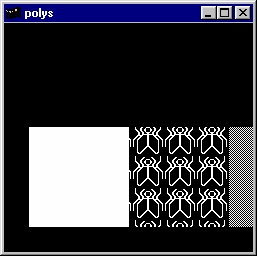

polys.c. This program demonstrates polygon stippling.

smooth.c. This program demonstrates smooth shading. A smooth shaded polygon is drawn in a 2-D projection.
picksquare.c. Use of multiple names and picking are demonstrated. A 3x3 grid of squares is drawn. When the left mouse button is pressed, all squares under the cursor position have their color changed.